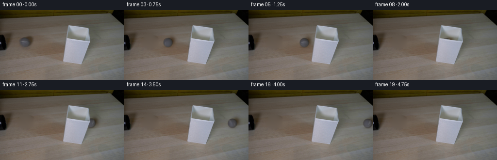
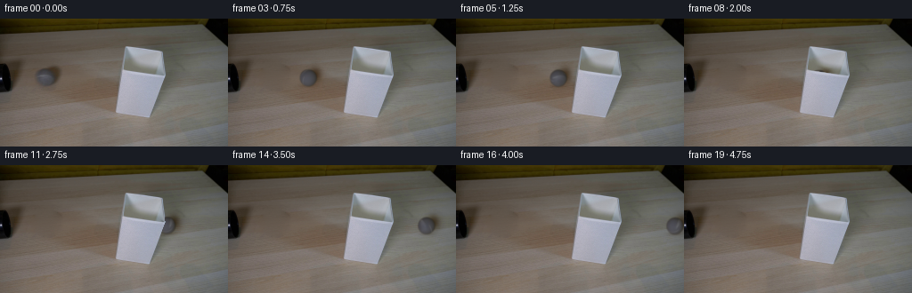
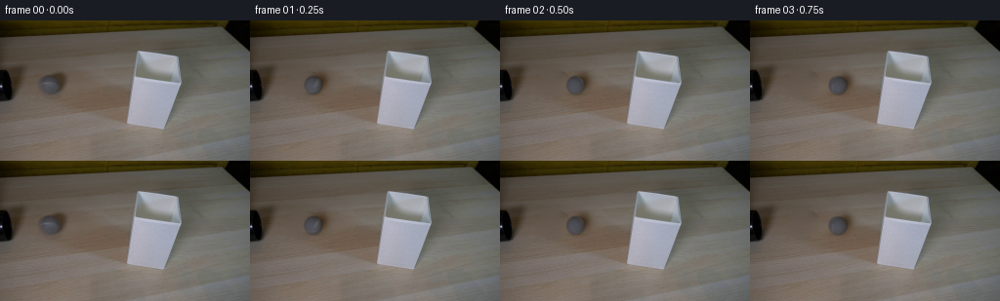

CODING AGENTS AS PIXEL WORLD MODELS
traex/GPT-6.1-Sol · 0145
点击播放 · 原生 RGB 像素
逐轮保存的候选
回放视频、检查图与代码变化。
每份候选均可单独播放。实际图片检查记录在下方工具轨迹中。
候选 01播放与检查图
点击播放 · 原生 RGB 像素

展开代码变化
--- 上一保存版本
+++ 本次保存版本
@@ -0,0 +1,105 @@
+from pathlib import Path
+import numpy as np
+from PIL import Image
+from scipy.ndimage import gaussian_filter, map_coordinates
+from scipy.sparse import lil_matrix
+from scipy.sparse.linalg import spsolve
+import artifact_io
+
+ROOT=Path(__file__).resolve().parent
+
+def clean_plate(im):
+ y,x=np.mgrid[:144,:256]
+ # Only the ball and its soft cast shadow are replaced with the surrounding wood.
+ hole=((x-53.)/18.5)**2+((y-65.2)/15.)**2<1
+ ij=np.argwhere(hole);ids=np.full(hole.shape,-1,dtype=int);ids[hole]=np.arange(len(ij))
+ A=lil_matrix((len(ij),len(ij)));b=np.zeros((len(ij),3))
+ for k,(yy,xx) in enumerate(ij):
+ A[k,k]=4
+ for dy,dx in [(0,1),(0,-1),(1,0),(-1,0)]:
+ y2,x2=yy+dy,xx+dx
+ if hole[y2,x2]:A[k,ids[y2,x2]]=-1
+ else:b[k]+=im[y2,x2]
+ plate=im.copy();plate[hole]=spsolve(A.tocsr(),b)
+ return plate
+
+
+def generate():
+ first=np.asarray(Image.open(ROOT/'first_frame.png').convert('RGB'))
+ im=first.astype(float);plate=clean_plate(im)
+ h,w=144,256;S=4
+ yy,xx=np.meshgrid((np.arange(h*S)+.5)/S-.5,(np.arange(w*S)+.5)/S-.5,indexing='ij')
+ high=np.stack([map_coordinates(plate[...,c],[yy,xx],order=1,mode='nearest') for c in range(3)],axis=-1)
+ originalhigh=np.stack([map_coordinates(im[...,c],[yy,xx],order=1,mode='nearest') for c in range(3)],axis=-1)
+ cx0,cy0,r=51.84,65.75,9.54
+ Y,X=np.mgrid[:h,:w]
+ nx=(X-cx0)/r;ny=(cy0-Y)/r;nz=np.sqrt(np.maximum(0,1-nx*nx-ny*ny))
+ f=np.stack([np.ones_like(nx),nx,ny,nz],-1)
+ valid=nx*nx+ny*ny<.72
+ coef=np.linalg.lstsq(f[valid],im[valid],rcond=None)[0]
+ for _ in range(6):
+ prediction=f@coef;e=(im-prediction).mean(-1)
+ valid=(nx*nx+ny*ny<.72)&(e>-6)&(e<5)
+ coef=np.linalg.lstsq(f[valid],im[valid],rcond=None)[0]
+ source_detail=np.clip(im-f@coef,-9,28)
+ source_detail=gaussian_filter(source_detail,(.3,.3,0))
+ # The lampshade is nearer to the camera than the ball's straight path.
+ # Use its actual image boundary as a static foreground holdout.
+ foreground=np.zeros((h,w),float)
+ for y in range(30,113):
+ left=140-(y-32)*.14
+ right=183 if y<63 else 185-(y-63)*.37
+ rowmask=(X[y]>left-2)&(X[y]<right+2)
+ foreground[y,rowmask]=np.clip((im[y,rowmask].mean(-1)-116)/23,0,1)
+ hold=map_coordinates(foreground,[yy,xx],order=1,mode='nearest')
+ axis=np.array([0.,.65,.76]);axis/=np.linalg.norm(axis)
+ frames=[first.copy()]
+ for i in range(1,20):
+ t=i/4
+ distance=51.0*t-.65*t*t
+ cx=cx0+distance
+ cy=cy0+.012*distance
+ radius=r
+ theta=distance/radius
+ ux=(xx-cx)/radius;uy=(cy-yy)/radius
+ disc=ux*ux+uy*uy
+ uz=np.sqrt(np.maximum(0,1-disc))
+ mask=(disc<=1).astype(float)
+ n=np.stack([ux,uy,uz],-1)
+ # Inverse rolling rotation, to sample the felt in object coordinates.
+ ct,st=np.cos(theta),np.sin(theta)
+ rotated=n*ct-np.cross(axis,n)*st+np.sum(n*axis,-1)[...,None]*axis*(1-ct)
+ ox,oy,oz=np.moveaxis(rotated,-1,0)
+ longitude=np.arctan2(ox,oz)
+ latitude=np.arcsin(np.clip(oy,-1,1))
+ # A closed tennis-ball seam on the unseen part of the original ball.
+ seam_distance=latitude-(.13+.32*np.sin(2*longitude+.2))
+ seam=np.exp(-.5*(seam_distance/.054)**2)
+ felt=(np.sin(ox*171+oy*91+oz*113)*np.sin(oy*177-oz*97+ox*68)+
+ .5*np.sin(oy*285+oz*235-ox*191))*1.15
+ detail=np.stack([felt,felt,felt],-1)+seam[...,None]*np.array([14.,14.,13.])
+ # Preserve the observed front-side felt and seam rather than substituting a drawing.
+ sample_y=cy0-oy*radius;sample_x=cx0+ox*radius
+ observed=np.stack([map_coordinates(source_detail[...,c],[sample_y,sample_x],order=1,mode='nearest') for c in range(3)],-1)
+ reliability=np.clip((oz-.42)/.30,0,1)
+ detail=observed*reliability[...,None]+detail*(1-reliability[...,None])
+ shade=(coef[0]+ux[...,None]*coef[1]+uy[...,None]*coef[2]+uz[...,None]*coef[3])
+ ball=np.clip(shade+detail,25,145)
+ # Soft side-cast shadow and a compact contact shadow, travelling with the ball.
+ sh=.525*np.exp(-.5*(((xx-cx-7.7)/4.97)**2+((yy-cy+3.77)/5.91)**2))
+ sh+=.17*np.exp(-.5*(((xx-cx)/6)**2+((yy-cy-radius+.5)/1.5)**2))
+ scene=high*(1-sh[...,None]*np.array([.79,1.,1.27]))
+ # The high resolution coverage and lens softness give a natural photographed rim.
+ alpha=gaussian_filter(mask,.62*S)
+ ball=gaussian_filter(ball,(.33*S,.33*S,0))
+ scene=scene*(1-alpha[...,None])+ball*alpha[...,None]
+ scene=scene*(1-hold[...,None])+originalhigh*hold[...,None]
+ frame=scene.reshape(h,S,w,S,3).mean((1,3))
+ # Avoid resampling the fixed camera plate outside the moving ball/shadow region.
+ active=(np.abs(X-cx)<32)&(np.abs(Y-cy)<23)
+ frame[~active]=plate[~active]
+ frames.append(np.clip(np.rint(frame),0,255).astype(np.uint8))
+ return np.stack(frames)
+
+if __name__=='__main__':
+ artifact_io.save(generate(),ROOT)
候选 02播放与检查图
点击播放 · 原生 RGB 像素


展开代码变化
--- 上一保存版本
+++ 本次保存版本
@@ -1,7 +1,7 @@
from pathlib import Path
import numpy as np
from PIL import Image
-from scipy.ndimage import gaussian_filter, map_coordinates
+from scipy.ndimage import gaussian_filter, map_coordinates, distance_transform_edt
from scipy.sparse import lil_matrix
from scipy.sparse.linalg import spsolve
import artifact_io
@@ -21,6 +21,10 @@
if hole[y2,x2]:A[k,ids[y2,x2]]=-1
else:b[k]+=im[y2,x2]
plate=im.copy();plate[hole]=spsolve(A.tocsr(),b)
+ grain=im-gaussian_filter(im,(1.4,1.4,0))
+ sampled_grain=grain[y,np.minimum(x+42,255)]
+ feather=np.clip(distance_transform_edt(hole)/3,0,1)
+ plate+=sampled_grain*feather[...,None]*.65
return plate
@@ -29,8 +33,8 @@
im=first.astype(float);plate=clean_plate(im)
h,w=144,256;S=4
yy,xx=np.meshgrid((np.arange(h*S)+.5)/S-.5,(np.arange(w*S)+.5)/S-.5,indexing='ij')
- high=np.stack([map_coordinates(plate[...,c],[yy,xx],order=1,mode='nearest') for c in range(3)],axis=-1)
- originalhigh=np.stack([map_coordinates(im[...,c],[yy,xx],order=1,mode='nearest') for c in range(3)],axis=-1)
+ high=np.repeat(np.repeat(plate,S,axis=0),S,axis=1)
+ originalhigh=np.repeat(np.repeat(im,S,axis=0),S,axis=1)
cx0,cy0,r=51.84,65.75,9.54
Y,X=np.mgrid[:h,:w]
nx=(X-cx0)/r;ny=(cy0-Y)/r;nz=np.sqrt(np.maximum(0,1-nx*nx-ny*ny))
@@ -51,7 +55,7 @@
right=183 if y<63 else 185-(y-63)*.37
rowmask=(X[y]>left-2)&(X[y]<right+2)
foreground[y,rowmask]=np.clip((im[y,rowmask].mean(-1)-116)/23,0,1)
- hold=map_coordinates(foreground,[yy,xx],order=1,mode='nearest')
+ hold=np.repeat(np.repeat(foreground,S,axis=0),S,axis=1)
axis=np.array([0.,.65,.76]);axis/=np.linalg.norm(axis)
frames=[first.copy()]
for i in range(1,20):
可观测工具轨迹
实际执行的命令与返回图片。
命令 1exit 0
/bin/bash -lc 'ls -la && cat prompt.txt && cat GENERATION_RULES.md'
命令 2exit 0
/bin/bash -lc "cat artifact_io.py && python - <<'PY'
from PIL import Image
import numpy as np
im=np.array(Image.open('first_frame.png'));print(im.shape)
print('range',im.min((0,1)),im.max((0,1)))
# color luminance ascii 128x72
im=np.array(Image.open('first_frame.png').resize((128,72)))
g=(im[...,0]*.299+im[...,1]*.587+im[...,2]*.114)
chars=' .,:;irsXA253hMHGS#9B&@'
for row in g:
print(''.join(chars[min(len(chars)-1,int(x/256*len(chars)))] for x in row))
PY"命令 3exit 0
/bin/bash -lc "python - <<'PY'
from PIL import Image
import numpy as np
im=np.array(Image.open('first_frame.png'))
for box in [(0,42,78,92),(120,24,198,120)]:
x0,y0,x1,y1=box;crop=im[y0:y1,x0:x1];g=crop.mean(2); chars=' .,:;irsXA253hMHGS#9B&@'
print('BOX',box)
print(' '+''.join(str(x//10%10) for x in range(x0,x1)))
print(' '+''.join(str(x%10) for x in range(x0,x1)))
for y,row in enumerate(g):print(f'{y+y0:3} '+''.join(chars[min(len(chars)-1,int(x/256*len(chars)))] for x in row))
print('GRID rgb')
for y in range(48,91,3):
print(y,[(x,tuple(im[y,x])) for x in range(0,73,4)])
PY"命令 4exit 0
/bin/bash -lc "python - <<'PY'
from PIL import Image
import numpy as np
im=np.array(Image.open('first_frame.png')).astype(float)
# ball chroma map
for y in range(50,82):
print(f'{y:2} '+''.join('O' if im[y,x,2]-im[y,x,0]>2 else 'o' if abs(im[y,x,2]-im[y,x,0])<6 else '+' if im[y,x,0]-im[y,x,2]<12 else '.' for x in range(30,76)))
print('Ball exact colors')
for y in range(54,78):
print(y, ' '.join('%3d'% (im[y,x,2]-im[y,x,0]) for x in range(38,66)))
PY"命令 5exit 0
/bin/bash -lc "python - <<'PY'
import importlib.util
for m in ['numpy','PIL','scipy','cv2']:print(m, bool(importlib.util.find_spec(m)))
from PIL import Image
import numpy as np
im=np.array(Image.open('first_frame.png')).astype(float)
print('luminance ball region')
for y in range(55,78): print(f'{y:2d}', ' '.join('%2d'%int(im[y,x].mean()) for x in range(37,68)))
PY"命令 6exit 0
/bin/bash -lc "python - <<'PY'
from PIL import Image
import numpy as np
im=np.array(Image.open('first_frame.png')).astype(float)
# print ball high contrast 2x ascii invert luminance to capture shape
chars=' .,:;irsXA253hMHGS#9B&@'
for y in range(52,81):
print(f'{y:2} '+''.join(chars[np.clip(int((im[y,x].mean()-40)/75*len(chars)),0,len(chars)-1)]*2 for x in range(34,73)))
# lamp mask red relative table
for y in range(30,113,4):
inds=np.where(im[y,:,2]-im[y,:,0]>-2)[0]; inds=inds[(inds>118)&(inds<197)]
print(y,(inds.min(),inds.max()) if len(inds) else None,[(x,tuple(im[y,x].astype(int))) for x in [129,131,133,135,137,139,141,145,175,178,181,184,187,190]])
PY"命令 7exit 0
/bin/bash -lc "cat > .tmp/analyze.py <<'PY'
import numpy as np
from PIL import Image
from scipy.ndimage import binary_dilation
from scipy.sparse import lil_matrix
from scipy.sparse.linalg import spsolve
im=np.array(Image.open('first_frame.png')).astype(float)
y,x=np.mgrid[:144,:256]
hole=((x-53.0)/18.5)**2+((y-65.2)/15.0)**2<1
ij=np.argwhere(hole);ids=np.full(hole.shape,-1);ids[hole]=np.arange(len(ij))
A=lil_matrix((len(ij),len(ij)));b=np.zeros((len(ij),3))
for i,(yy,xx) in enumerate(ij):
A[i,i]=4
for dy,dx in [(0,1),(0,-1),(1,0),(-1,0)]:
y2,x2=yy+dy,xx+dx
if hole[y2,x2]: A[i,ids[y2,x2]]=-1
else:b[i]+=im[y2,x2]
bg=im.copy();bg[hole]=spsolve(A.tocsr(),b)
Image.fromarray(bg.astype('uint8')).save('.tmp/background.png')
cy,cx,R=65.7,51.5,10.3
nx=(x-cx)/R;ny=(cy-y)/R;nz=np.sqrt(np.maximum(0,1-nx*nx-ny*ny))
m=nx**2+ny**2<.74
# fit no seam outliers
features=np.stack([np.ones_like(nx),nx,ny,nz,nx*ny,ny**2,nx**2],axis=-1)
coeff=np.linalg.lstsq(features[m],im[m],rcond=None)[0]
for k in range(3):
pred=features@coeff;err=(im-pred).mean(-1);m2=m&(err<7)&(err>-7)
coeff=np.linalg.lstsq(features[m2],im[m2],rcond=None)[0]
print('coeff',coeff.tolist());pred=features@coeff
print('mae',np.abs(im[m2]-pred[m2]).mean(), 'minmax',pred[nz>0].min(0),pred[nz>0].max(0))
print('shading')
for yy in range(57,76,2):
print(yy,[(xx,np.round(pred[yy,xx]).astype(int).tolist(),np.round(im[yy,xx]-pred[yy,xx]).astype(int).tolist()) for xx in range(43,61,3) if nz[yy,xx]>0])
print('bg source')
for yy in [55,57,60,65,70,75,78]:print(yy,np.round(bg[yy,52]).astype(int),np.round(im[yy,52]).astype(int))
np.savez('.tmp/data.npz',bg=bg,coeff=coeff)
PY
python .tmp/analyze.py"命令 8exit 0
/bin/bash -lc "python - <<'PY'
exec(open('.tmp/analyze.py').read().split('cy,cx')[0])
cx,cy,R=51.0,65.4,10.1
nx=(x-cx)/R;ny=(cy-y)/R;nz=np.sqrt(np.maximum(0,1-nx*nx-ny*ny))
features=np.stack([np.ones_like(nx),nx,ny,nz],-1)
m=nx*nx+ny*ny<.65
for _ in range(5):
coeff=np.linalg.lstsq(features[m],im[m],rcond=None)[0];p=features@coeff;err=(im-p).mean(-1);m=(nx*nx+ny*ny<.65)&(err<6)&(err>-6)
print(coeff);print('MAE',abs(im[m]-p[m]).mean());print('edge',p[65,41],p[65,61],p[56,51],p[75,51]);print('center',p[65,51])
PY"命令 9exit 0
/bin/bash -lc "cat > .tmp/fit.py <<'PY'
exec(open('.tmp/analyze.py').read().split('cy,cx')[0])
from scipy.optimize import least_squares
from scipy.ndimage import gaussian_filter
# render antialiased sphere and shadow: fit to the observed isolated object
Y,X=np.mgrid[49:82,33:74];orig=im[49:82,33:74];base=bg[49:82,33:74]
ss=3
ys,xs=np.mgrid[49:82:complex(33*ss),33:74:complex(41*ss)]
# use correct subpixel centers
ys=(np.arange(33*ss)+.5)/ss+49-.5;xs=(np.arange(41*ss)+.5)/ss+33-.5
xs,ys=np.meshgrid(xs,ys)
baseH=np.stack([np.repeat(np.repeat(base[...,c],ss,0),ss,1) for c in range(3)],-1)
def render(p):
cx,cy,r,dx,dy,sx,sy,sh,red,green,blue,lx,ly,lz=p
nx=(xs-cx)/r;ny=(cy-ys)/r;d=nx*nx+ny*ny;nz=np.sqrt(np.maximum(0,1-d));a=(d<1).astype(float)
shadow=np.exp(-.5*(((xs-cx-dx)/sx)**2+((ys-cy-dy)/sy)**2))*sh
shadow+=.18*np.exp(-.5*(((xs-cx)/6)**2+((ys-cy-r+.5)/1.5)**2))
color=np.array([red,green,blue])[None,None,:]+nx[...,None]*lx+ny[...,None]*ly+nz[...,None]*lz
# greyness near face stronger (source edge looks less blue)
color+=nz[...,None]*np.array([-2,0,6])
pred=baseH*(1-shadow[...,None]*np.array([.79,1.0,1.27]))
pred=pred*(1-a[...,None])+color*a[...,None]
pred=gaussian_filter(pred,(.70*ss,.70*ss,0))
return pred.reshape(33,ss,41,ss,3).mean((1,3))
p0=[51.5,65.5,9.7,7,-3.7,6.7,8.8,.32,43,41,38,-8,-10,35]
lo=[49,63,8,3,-8,4,4,.1,20,20,20,-25,-25,10]
hi=[54,68,11.5,13,2,14,14,.6,70,70,70,10,10,65]
def fun(p):
diff=render(p)-orig
# seams: don't fit brighter seam
weights=np.ones_like(diff);weights[diff<-8]=.35
return (diff*weights).ravel()
res=least_squares(fun,p0,bounds=(lo,hi),max_nfev=100)
print(res.x.tolist(), 'mae',abs(render(res.x)-orig).mean())
pred=render(res.x)
np.savez('.tmp/fit.npz',params=res.x,bg=bg)
for y in [55,57,60,64,67,72,75,77]:print(y,' '.join('%d/%d'%(orig[y-49,x-33].mean(),pred[y-49,x-33].mean()) for x in range(40,68,3)))
PY
OPENBLAS_NUM_THREADS=1 python .tmp/fit.py"命令 10exit 0
/bin/bash -lc "python - <<'PY'
import numpy as np
from PIL import Image
from scipy.ndimage import map_coordinates
D=np.load('.tmp/fit.npz');im=np.array(Image.open('first_frame.png')).astype(float);bg=D['bg'];p=D['params'];cx,cy,r,dx,dy,sx,sy,sh,*_=p
Y,X=np.mgrid[:144,:256]
d=np.sqrt(((X-cx)/r)**2+((Y-cy)/r)**2)
# source approximate ball matte depending chroma
for y in range(55,77):
print(y,''.join('O' if d[y,x]<.83 else 'o' if d[y,x]<1 else '+' if d[y,x]<1.2 else '.' for x in range(38,66)))
# seam bright resid from robust polynomial fit in central sphere
nx=(X-cx)/r;ny=(cy-Y)/r;nz=np.sqrt(np.maximum(0,1-nx*nx-ny*ny));fs=np.stack([np.ones_like(nx),nx,ny,nz],-1)
m=(d<.82)
co=np.linalg.lstsq(fs[m],im[m],rcond=None)[0]
for _ in range(6):
pp=fs@co;er=(im-pp).mean(-1);m=(d<.85)&(er>-6)&(er<5);co=np.linalg.lstsq(fs[m],im[m],rcond=None)[0]
print('co',co)
for y in range(58,75):print(y, ' '.join('%2d'%er[y,x] for x in range(43,61)))
PY"命令 11exit 0
/bin/bash -lc "python - <<'PY'
import numpy as np
from PIL import Image
im=np.array(Image.open('first_frame.png')).astype(float)
# lamp coverage print using brightness threshold
for y in [31,35,40,50,57,60,65,70,75,80,90,100,106,110]:
print(y,''.join('#' if im[y,x].mean()>130 else '+' if im[y,x].mean()>120 else '.' for x in range(124,193)))
PY"命令 12exit 0
/bin/bash -lc "cat > generate.py <<'PY'
from pathlib import Path
import numpy as np
from PIL import Image
from scipy.ndimage import gaussian_filter, map_coordinates
from scipy.sparse import lil_matrix
from scipy.sparse.linalg import spsolve
import artifact_io
ROOT=Path(__file__).resolve().parent
def clean_plate(im):
y,x=np.mgrid[:144,:256]
# Only the ball and its soft cast shadow are replaced with the surrounding wood.
hole=((x-53.)/18.5)**2+((y-65.2)/15.)**2<1
ij=np.argwhere(hole);ids=np.full(hole.shape,-1,dtype=int);ids[hole]=np.arange(len(ij))
A=lil_matrix((len(ij),len(ij)));b=np.zeros((len(ij),3))
for k,(yy,xx) in enumerate(ij):
A[k,k]=4
for dy,dx in [(0,1),(0,-1),(1,0),(-1,0)]:
y2,x2=yy+dy,xx+dx
if hole[y2,x2]:A[k,ids[y2,x2]]=-1
else:b[k]+=im[y2,x2]
plate=im.copy();plate[hole]=spsolve(A.tocsr(),b)
return plate
def generate():
first=np.asarray(Image.open(ROOT/'first_frame.png').convert('RGB'))
im=first.astype(float);plate=clean_plate(im)
h,w=144,256;S=4
yy,xx=np.meshgrid((np.arange(h*S)+.5)/S-.5,(np.arange(w*S)+.5)/S-.5,indexing='ij')
high=np.stack([map_coordinates(plate[...,c],[yy,xx],order=1,mode='nearest') for c in range(3)],axis=-1)
originalhigh=np.stack([map_coordinates(im[...,c],[yy,xx],order=1,mode='nearest') for c in range(3)],axis=-1)
cx0,cy0,r=51.84,65.75,9.54
Y,X=np.mgrid[:h,:w]
nx=(X-cx0)/r;ny=(cy0-Y)/r;nz=np.sqrt(np.maximum(0,1-nx*nx-ny*ny))
f=np.stack([np.ones_like(nx),nx,ny,nz],-1)
valid=nx*nx+ny*ny<.72
coef=np.linalg.lstsq(f[valid],im[valid],rcond=None)[0]
for _ in range(6):
prediction=f@coef;e=(im-prediction).mean(-1)
valid=(nx*nx+ny*ny<.72)&(e>-6)&(e<5)
coef=np.linalg.lstsq(f[valid],im[valid],rcond=None)[0]
source_detail=np.clip(im-f@coef,-9,28)
source_detail=gaussian_filter(source_detail,(.3,.3,0))
# The lampshade is nearer to the camera than the ball's straight path.
# Use its actual image boundary as a static foreground holdout.
foreground=np.zeros((h,w),float)
for y in range(30,113):
left=140-(y-32)*.14
right=183 if y<63 else 185-(y-63)*.37
rowmask=(X[y]>left-2)&(X[y]<right+2)
foreground[y,rowmask]=np.clip((im[y,rowmask].mean(-1)-116)/23,0,1)
hold=map_coordinates(foreground,[yy,xx],order=1,mode='nearest')
axis=np.array([0.,.65,.76]);axis/=np.linalg.norm(axis)
frames=[first.copy()]
for i in range(1,20):
t=i/4
distance=51.0*t-.65*t*t
cx=cx0+distance
cy=cy0+.012*distance
radius=r
theta=distance/radius
ux=(xx-cx)/radius;uy=(cy-yy)/radius
disc=ux*ux+uy*uy
uz=np.sqrt(np.maximum(0,1-disc))
mask=(disc<=1).astype(float)
n=np.stack([ux,uy,uz],-1)
# Inverse rolling rotation, to sample the felt in object coordinates.
ct,st=np.cos(theta),np.sin(theta)
rotated=n*ct-np.cross(axis,n)*st+np.sum(n*axis,-1)[...,None]*axis*(1-ct)
ox,oy,oz=np.moveaxis(rotated,-1,0)
longitude=np.arctan2(ox,oz)
latitude=np.arcsin(np.clip(oy,-1,1))
# A closed tennis-ball seam on the unseen part of the original ball.
seam_distance=latitude-(.13+.32*np.sin(2*longitude+.2))
seam=np.exp(-.5*(seam_distance/.054)**2)
felt=(np.sin(ox*171+oy*91+oz*113)*np.sin(oy*177-oz*97+ox*68)+
.5*np.sin(oy*285+oz*235-ox*191))*1.15
detail=np.stack([felt,felt,felt],-1)+seam[...,None]*np.array([14.,14.,13.])
# Preserve the observed front-side felt and seam rather than substituting a drawing.
sample_y=cy0-oy*radius;sample_x=cx0+ox*radius
observed=np.stack([map_coordinates(source_detail[...,c],[sample_y,sample_x],order=1,mode='nearest') for c in range(3)],-1)
reliability=np.clip((oz-.42)/.30,0,1)
detail=observed*reliability[...,None]+detail*(1-reliability[...,None])
shade=(coef[0]+ux[...,None]*coef[1]+uy[...,None]*coef[2]+uz[...,None]*coef[3])
ball=np.clip(shade+detail,25,145)
# Soft side-cast shadow and a compact contact shadow, travelling with the ball.
sh=.525*np.exp(-.5*(((xx-cx-7.7)/4.97)**2+((yy-cy+3.77)/5.91)**2))
sh+=.17*np.exp(-.5*(((xx-cx)/6)**2+((yy-cy-radius+.5)/1.5)**2))
scene=high*(1-sh[...,None]*np.array([.79,1.,1.27]))
# The high resolution coverage and lens softness give a natural photographed rim.
alpha=gaussian_filter(mask,.62*S)
ball=gaussian_filter(ball,(.33*S,.33*S,0))
scene=scene*(1-alpha[...,None])+ball*alpha[...,None]
scene=scene*(1-hold[...,None])+originalhigh*hold[...,None]
frame=scene.reshape(h,S,w,S,3).mean((1,3))
# Avoid resampling the fixed camera plate outside the moving ball/shadow region.
active=(np.abs(X-cx)<32)&(np.abs(Y-cy)<23)
frame[~active]=plate[~active]
frames.append(np.clip(np.rint(frame),0,255).astype(np.uint8))
return np.stack(frames)
if __name__=='__main__':
artifact_io.save(generate(),ROOT)
PY
OPENBLAS_NUM_THREADS=1 python generate.py"命令 13exit 1
/bin/bash -lc "python - <<'PY'
import numpy as np
from PIL import Image
for i in [0,1,3,6,12,16,19]:
im=np.array(Image.open('frames/%02d.png'%i));cx=51.84+51*i/4-.65*(i/4)**2;cy=65.75+.012*(cx-51.84)
print('frame',i,'ball',cx,cy)
x0=int(cx)-14;x1=int(cx)+15
for y in range(55,78,2):
print(''.join(' .,:;irsXA253hMHGS#9B&@'[int(im[y,x].mean()/256*22)] if 0<=x<256 else ' ' for x in range(x0,x1)))
print('range',im[56:75,max(0,int(cx)-8):min(256,int(cx)+8)].min((0,1)),im[56:75,max(0,int(cx)-8):min(256,int(cx)+8)].max((0,1)))
PY"命令 14exit 0
/bin/bash -lc "OPENBLAS_NUM_THREADS=1 python generate.py && python - <<'PY'
from PIL import Image
import numpy as np
from pathlib import Path
frames=np.stack([np.array(Image.open(p)) for p in sorted(Path('frames').glob('*.png'))])
first=np.array(Image.open('first_frame.png'))
assert frames.shape==(20,144,256,3)
assert frames.dtype==np.uint8
assert np.array_equal(frames[0],first)
assert np.isfinite(frames).all()
print('Validated',frames.shape,frames.dtype,'first frame exact')
for i in range(1,20):
a=frames[i].astype(float); b=frames[i-1].astype(float)
print(i,'changed pixels',np.count_nonzero(np.any(a"'!=b,axis=-1)), '"'mean delta',round(abs(a-b).mean(),3))
print('Output',Path('pixels.npz').stat().st_size)
PY"保存候选 2 份；完成命令 14 次；可验证图片返回 0 张。原始 API 响应与完整日志保留在本地。